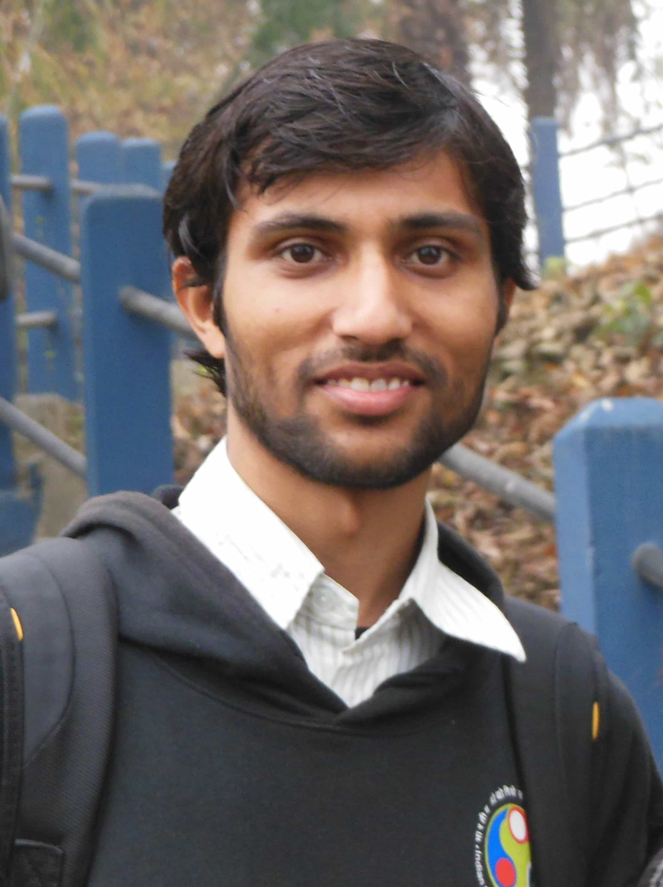

|
 |
Anil Kag
Research Fellow
Machine Learning & Optimization Group
Microsoft Research India
I am a research fellow in the Machine Learning & Optimization group at Microsoft Research, India, where I work with Dr. Manik Varma on Extreme Classification. Previously, I was an undergraduate student at IIT Guwahati where I obtained my B. Tech in Computer Science in 2014. I worked on Live Streaming via Peer to Peer Overlay Networks with Prof. Diganta Goswami for my undergraduate thesis. I've also worked as a Software Engineer for 2 years at Dynamics CRM, Microsoft India Development Center, Bangalore.
You can find a link to my resume here.
|